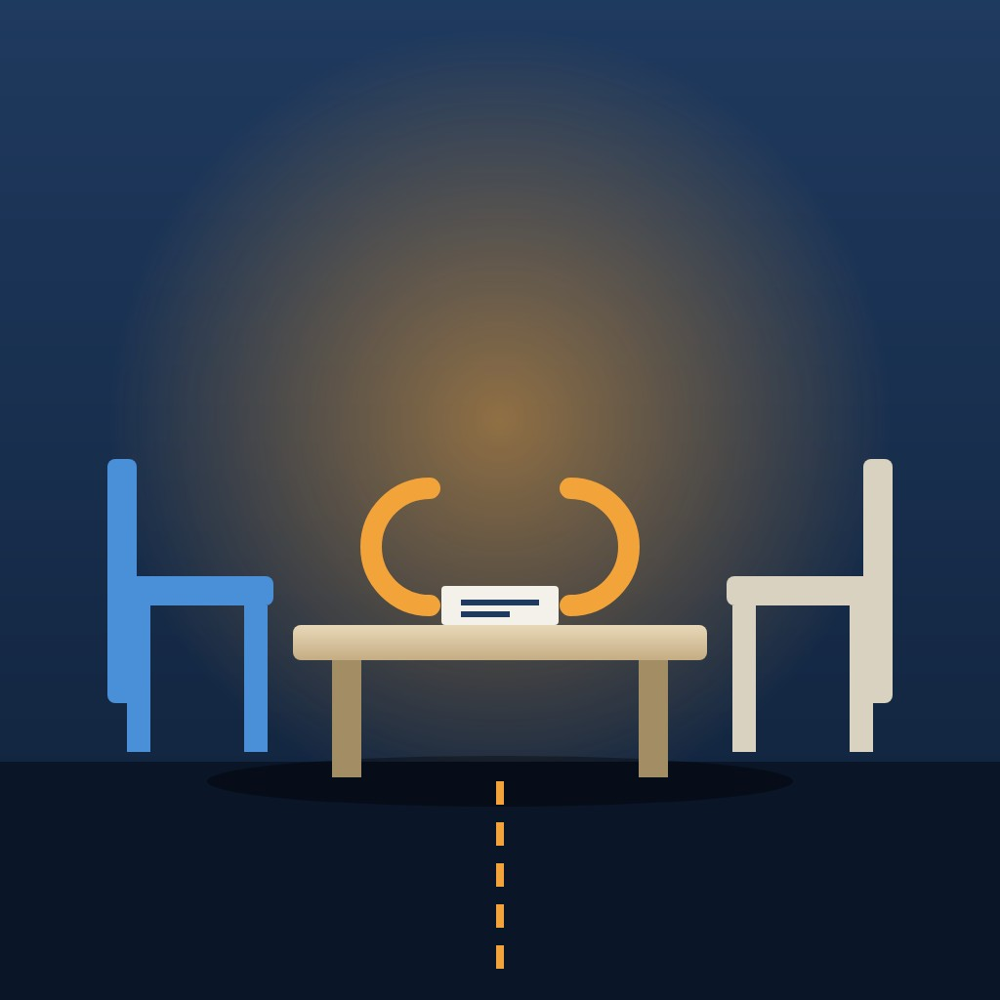

World

Abu Dhabi talks yield a large prisoner exchange but no path to peace in Ukraine
Russia and Ukraine agreed in principle on 11 November to a large prisoner exchange after two days of US-mediated talks in Abu Dhabi, but made no breakthrough on territory or a ceasefire.
Abstract
Two days of US-mediated talks between Russian and Ukrainian officials ended in Abu Dhabi on 11 November 2026 with an agreement on a prisoner exchange but no breakthrough on ending a war that is nearly five years old[1]. Medinsky said the parties had agreed in principle on a new large-scale prisoner exchange[2]. President Volodymyr Zelensky said the negotiators had discussed releasing 1,000 prisoners from each side, a figure that could rise to 1,500 each[3]. Russia demands all of Donetsk region, while Ukraine proposes freezing the current front line as the basis for a ceasefire[4]. Medinsky said the European security system was central to the discussions[2]. The Istanbul talks of May 2025 had produced an agreement to exchange 1,000 prisoners of war each but no ceasefire[5]. Fighting continued, and the UN monitoring mission recorded 2,570 civilians killed and 15,211 injured from January to September 2026, 59 per cent more than in the same period of 2025[6]. The prisoner agreement is a humanitarian result with direct consequences for thousands of families, but it does not settle any of the political questions that have blocked a settlement since 2022. The size of the exchange remains unknown: Kushner said the numbers would be finalised after the talks, and the range of 1,000 to 1,500 prisoners per side comes from Zelensky alone[3].
Key points
- Russia and Ukraine agreed in principle to a large prisoner exchange, with Zelensky citing 1,000 prisoners from each side, possibly rising to 1,500 each[3].
- The Abu Dhabi round was the first direct negotiation between Kyiv and Moscow in nine months and produced no breakthrough on a ceasefire or territory[3].
- Russia demands all of Donetsk region, while Ukraine proposes freezing the current front line as the basis for a ceasefire[4].
- The Istanbul talks of May 2025 produced an agreement to exchange 1,000 prisoners of war each, then the largest swap of the war, but no ceasefire[5].
- The UN monitoring mission recorded 2,570 civilians killed and 15,211 injured from January to September 2026, 59 per cent more than in the same period of 2025[6].
- A UN report found that Russian forces executed at least 16 captured Ukrainian servicemen between mid-November 2025 and January 2026[7].
References
- Russia-Ukraine talks in Abu Dhabi end with prisoner exchange agreement. Al Jazeera; 11 Nov 2026. News report✓ Link checkedArchived copySupports the end of talks without breakthrough, Kushner's 'tough but productive' remark, the TASS two-to-three-week timetable, the analyst's benchmark and Arakhamia's call for multilateral talks. ↩
- Russia–Ukraine peace talks conclude in Abu Dhabi with prisoner exchange agreement but no breakthrough on territory. Meduza; 11 Nov 2026. News report✓ Link checkedArchived copySupports Medinsky's quotes on the exchange, territory and European security, Kushner's comments on territory and security guarantees, and Arakhamia's 'largest overall' remark. ↩
- Abu Dhabi peace talks end with prisoner exchange agreement as US envoys prepare to meet Putin. Euronews; 11 Nov 2026. News report✓ Link checkedArchived copySupports Kushner's quotes, confirmation by Medinsky and Umerov, Zelensky's 1,000 to 1,500 figures, the first direct talks in nine months and the trip to Dublin. ↩
- US Sees 'Real Shot' At Ukraine Peace Progress As Abu Dhabi Talks Begin. Radio Free Europe/Radio Liberty; 10 Nov 2026. News report✓ Link checkedSupports European participation, Russia's demand for all of Donetsk, Ukraine's front-line proposal and the US official's quote. ↩
- Russia, Ukraine agree prisoner swap as talks end without major breakthrough. Al Jazeera; 16 May 2025. News report✓ Link checkedArchived copySupports the Istanbul talks of May 2025 and the 1,000-for-1,000 agreement. ↩
- Russian attacks killed 328 civilian Ukrainians during September: Kyiv, Kherson and Sumy suffered the most – UN. Ukrainska Pravda; 16 Oct 2026. News report✓ Link checkedArchived copySupports the HRMMU figures for September and January to September 2026. ↩
- Press Release: UN report on civilian deaths and attacks on energy infrastructure. United Nations in Ukraine; 29 Jun 2026. Official report✓ Link checkedSupports the findings on executions and torture of prisoners of war and the report's methodology. ↩
A prisoner exchange without a breakthrough
Two days of talks between Russian and Ukrainian officials, mediated by the United States, ended in Abu Dhabi on 11 November 2026 with an agreement on a prisoner exchange but no breakthrough on ending a war that is now nearly five years old[1]. Jared Kushner, the US envoy, announced that the parties had agreed to the biggest humanitarian release of prisoners, with the numbers to be finalised the following day[2]. The heads of the two delegations, Vladimir Medinsky for Russia and Rustem Umerov for Ukraine, confirmed that an exchange was planned[2].
The size of the exchange has not been fixed. Zelensky said the negotiators had discussed releasing 1,000 prisoners from each side, a figure that could rise to 1,500 each[2]. Al Jazeera, citing the Russian state news agency TASS, reported that the exchange should take place within two to three weeks[1].
On the substance of the war, the two sides moved little. Euronews described the prisoner deal as the only concrete outcome of the first direct negotiations between Kyiv and Moscow in nine months, with no breakthrough on a ceasefire or on territory[2]. Kushner called territory "the hardest" of the remaining issues, while reporting "significant progress" on security guarantees for Ukraine[3]. He described the round as "a very tough meeting but a productive one"[1]. Kushner and Steve Witkoff were to travel to Moscow to meet President Putin, according to TASS, and then to Dublin to meet Zelensky[2,4].
Delegations and the dispute over European participation
The Russian delegation was led by Medinsky, a presidential aide, and included the deputy foreign ministers Sergei Ryabkov and Mikhail Galuzin, the military intelligence chief Igor Kostyukov and the senior General Staff officer Yury Zhigarlovsky[5,6]. Ukraine's team was led by Umerov, head of the Foreign Intelligence Service, and included Kyrylo Budanov, head of the Office of the President, along with Serhii Kyslytsia, Davyd Arakhamia and Vadym Skibitsky[5,7]. Witkoff and Kushner represented the United States[5].
European governments were present in Abu Dhabi but did not sit at the trilateral table. National security advisers from France, Germany, the United Kingdom and Italy, together with officials from NATO and the European Commission, met the Ukrainian and American teams separately[5,8]. The Moscow Times, summarising a Financial Times report, said the European officials wanted to stop Russia using the talks to impose its demands on the structure of European security[9].
Moscow had resisted a wider format. On 28 October the Kremlin aide Yuri Ushakov said European countries would not take part, while Finnish President Alexander Stubb said they would be involved[10]. The Kremlin spokesman, Dmitry Peskov, told TASS that Russia would eventually have to negotiate a future European security architecture with the Europeans, but questioned who in Europe was authorised to do so[11]. Citing Politico, the Kyiv Post reported that Witkoff and Kushner were pressing Russia to accept direct European participation, and that the White House wanted this to be the last round without full European involvement[12]. Hanna Shelest, a Ukrainian security analyst, was sceptical before the round began: "I doubt the Russian delegation will let the Europeans have a say."[13].
Earlier rounds and the pattern since 2022
Russia began its full-scale invasion of Ukraine on 24 February 2022[14]. On 12 October 2022 the UN General Assembly adopted resolution ES-11/4 by 143 votes to 5, with 35 abstentions, calling on Russia to withdraw its forces from Ukraine[15,16,17]. Only Russia, Belarus, North Korea, Nicaragua and Syria voted against[16].
Direct talks resumed in Istanbul on 16 May 2025, lasted less than two hours and produced an agreement to exchange 1,000 prisoners of war each, then the largest swap of the war, but no ceasefire[18]. The first trilateral round with US mediation took place in Abu Dhabi on 23 and 24 January 2026[19]. A second Abu Dhabi round in early February ended with an exchange of 314 prisoners of war, 157 from each side, the first exchange in five months, according to Reuters[20]. According to a compiled Wikipedia account, an exchange agreement reached in the first trilateral round led to 500-for-500 exchanges beginning on 5 March, and a further round planned for early March was postponed because of the 2026 conflict between Iran and the United States[21].
Contacts resumed in the autumn, when Witkoff met Putin in St Petersburg on 21 October, according to TASS[22]. The November round was the first trilateral meeting since February[5,6]. The documented record is a pattern: each round has produced humanitarian exchanges without movement on the core political questions.
What the prisoner figures show
The claim that the coming exchange will be the largest of the war cannot yet be tested, because no final number has been published. The benchmark is the 1,000-for-1,000 exchange agreed in Istanbul in May 2025[18]. A political analyst quoted by Al Jazeera said that the new deal would have to exceed that swap to be the biggest[1]. On the figures Zelensky gave, it would equal or exceed that benchmark[2]. Kushner said the numbers would be finalised the following day[2].
The humanitarian stakes are documented by independent monitors. A report released on 29 June 2026 by the UN Human Rights Monitoring Mission in Ukraine found that Russian forces executed at least 16 captured Ukrainian servicemen between mid-November 2025 and January 2026, and that 129 executions of Ukrainian prisoners of war by Russian forces had been verified since February 2022[23]. According to the UN, nearly all repatriated Ukrainian prisoners of war interviewed described torture or ill-treatment, and more than half of the Russian prisoners of war interviewed reported torture or ill-treatment by Ukrainian forces, mainly during capture and transit[23]. The report drew on 1,926 interviews, 180 field visits, 48 visits to places of detention and 78 hospital visits[23]. Testimony of this kind comes largely from people who have already been released, so it says more about conditions in the past than about the current treatment of those still held.
Territory, security and continuing violence
Territory remains the main obstacle. Zelensky said: "No one believes that Putin will stop if we give up the Donbas."[24]. Medinsky declared that "every inch of our land will be returned to Russia"[3]. Radio Free Europe/Radio Liberty reported that Russia demands all of Donetsk region, while Ukraine proposes freezing the current front line as the basis for a ceasefire[8]. The Kyiv Post, citing The Telegraph, reported that Ukraine rejected a US proposal to redraw the administrative borders of Donetsk and Luhansk regions, under which Russia could claim to have captured the whole Donbas while Ukraine kept the cities it holds[25,26]. The sequence of a ceasefire is also disputed: the Russian foreign minister, Sergei Lavrov, said European calls for a ceasefire were "aimed solely at giving Kyiv a breather to restore its combat capability", while Kyiv's position is that a ceasefire must come first[5,27].
Russia framed the round as being about more than Ukraine. Medinsky said the European security system was central to the discussions and that the sides "found mutual understanding in some areas, but not in others"[3]. The EU's foreign policy chief, Kaja Kallas, said on 9 November: "So far they have just been pretending that they negotiate because we haven't seen any goodwill from the Russian side."[8,28]. One senior US official said: "This is the first time I feel like we see real desire on the Russian side to finish."[8].
The fighting continued during the talks. A Russian strike on a market in Odesa region killed three people, according to the regional governor[24,29]. Hours before the talks began, Russian strikes on energy infrastructure caused power cuts across six Ukrainian regions[30]. The UN monitoring mission recorded 328 civilians killed and 2,105 injured in September 2026[31]. The UN High Commissioner for Human Rights, Volker Türk, stressed that the front line had changed very little[32].
Several questions remain open. The size of the exchange is not yet known, and the range of 1,000 to 1,500 prisoners per side comes from Zelensky alone[2]. The reported US proposal on the Donbas borders comes from The Telegraph, citing a Ukrainian source close to the negotiations[25,26]. Whether Moscow will accept European participation remains open[11]. The next steps are the planned meetings in Moscow, where Kushner said he and Witkoff would meet Putin to try to make more progress, and in Dublin[4].
References
- Russia-Ukraine talks in Abu Dhabi end with prisoner exchange agreement. Al Jazeera; 11 Nov 2026. News report✓ Link checkedArchived copySupports the end of talks without breakthrough, Kushner's 'tough but productive' remark, the TASS two-to-three-week timetable, the analyst's benchmark and Arakhamia's call for multilateral talks. ↩
- Abu Dhabi peace talks end with prisoner exchange agreement as US envoys prepare to meet Putin. Euronews; 11 Nov 2026. News report✓ Link checkedArchived copySupports Kushner's quotes, confirmation by Medinsky and Umerov, Zelensky's 1,000 to 1,500 figures, the first direct talks in nine months and the trip to Dublin. ↩
- Russia–Ukraine peace talks conclude in Abu Dhabi with prisoner exchange agreement but no breakthrough on territory. Meduza; 11 Nov 2026. News report✓ Link checkedArchived copySupports Medinsky's quotes on the exchange, territory and European security, Kushner's comments on territory and security guarantees, and Arakhamia's 'largest overall' remark. ↩
- Kushner announces plans to travel to Moscow with Witkoff on November 12. TASS; 11 Nov 2026. News report✓ Link checkedSupports Kushner's quoted statement on travelling to Moscow and then Dublin. ↩
- Ukraine, Russia, US conclude 1st day of peace talks in Abu Dhabi, discuss 'humanitarian, de-escalation steps'. The Kyiv Independent; 10 Nov 2026. News report✓ Link checkedArchived copySupports delegation membership, European observers, the first meeting since February, Zelensky's priority quote and Kyiv's ceasefire-first position. ↩
- Russia, Ukraine, and the U.S. to hold peace talks in Abu Dhabi on November 10, their first trilateral meeting since February. Meduza; 10 Nov 2026. News report✓ Link checkedArchived copySupports the Russian delegation's composition and the first trilateral meeting since February. ↩
- Head of Zelenskyy's office hopes Abu Dhabi talks will lead to new prisoner swaps. Ukrainska Pravda; 9 Nov 2026. News report✓ Link checkedArchived copySupports Ukraine's delegation membership and Budanov's quote on intensifying exchanges. ↩
- US Sees 'Real Shot' At Ukraine Peace Progress As Abu Dhabi Talks Begin. Radio Free Europe/Radio Liberty; 10 Nov 2026. News report✓ Link checkedSupports European participation, Russia's demand for all of Donetsk, Ukraine's front-line proposal and the US official's quote. ↩
- FT: European countries will send senior officials to Russia-US-Ukraine talks in Abu Dhabi. The Moscow Times; 9 Nov 2026. News report✓ Link checkedSupports European aims at the talks and Russia's earlier demands on NATO exercises and deployments. ↩
- Kremlin says European countries not included in next Ukraine talks. Al Jazeera; 28 Oct 2026. News report✓ Link checkedArchived copySupports Ushakov's statement and Stubb's contrary account. ↩
- Kremlin spokesman comments on security guarantees for Moscow, Kiev, dialogue with Europe. TASS; Nov 2026. News report✓ Link checkedSupports Peskov's statements on the trilateral format and future talks with Europe on security architecture. ↩
- US Wants Europe at Next Ukraine Peace Talks as Envoys Press Russia. Kyiv Post; 10 Nov 2026. News report✓ Link checkedArchived copySupports the US push for European participation, the 'Europe at the table' quote, Meloni's position and Kushner's security proposals. ↩
- European Officials Arrive In Abu Dhabi As Observers While Russia, Ukraine And Washington Hold Peace Talks. Foreign Policy Journal; 10 Nov 2026. News report✓ Link checkedSupports the names of European officials and Hanna Shelest's assessments. ↩
- Ukraine: Civilian casualties hit highest level since March 2022. United Nations; 13 Aug 2026. Official report✓ Link checkedArchived copySupports the invasion date, the July 2026 civilian toll and the caveat that actual figures are likely higher. ↩
- A/RES/ES-11/4 Territorial integrity of Ukraine: defending the principles of the Charter of the United Nations. UN Project; 12 Oct 2022. Primary data✓ Link checkedSupports the resolution's date, vote count, the states voting against and its demands. ↩
- Ukraine: UN General Assembly demands Russia reverse course on 'attempted illegal annexation'. United Nations; 12 Oct 2022. Official statement✓ Link checkedArchived copyGives the 143–5–35 vote, the five states voting against, the four regions and the demand to reverse the annexation declaration. ↩
- United Nations General Assembly Resolution ES-11/4. Wikipedia; 2022. Reference work✓ Link checkedArchived copyStates that the resolution calls on Russia to withdraw immediately, completely and unconditionally from Ukraine. ↩
- Russia, Ukraine agree prisoner swap as talks end without major breakthrough. Al Jazeera; 16 May 2025. News report✓ Link checkedArchived copySupports the Istanbul talks of May 2025 and the 1,000-for-1,000 agreement. ↩
- 2026 United States–Ukraine–Russia meetings in Abu Dhabi. Wikipedia. Reference work✓ Link checkedArchived copySupports the dates and participants of the January 2026 round. ↩
- Ukraine, Russia agree to major prisoner swap following second day of US-brokered talks in Abu Dhabi. The Nightly; 6 Feb 2026. News report✓ Link checkedArchived copySupports the February 2026 exchange of 314 prisoners, the first in five months. ↩
- 2026 United States–Ukraine–Russia meetings in Geneva. Wikipedia. Reference work✓ Link checkedArchived copySupports the Geneva talks, the 500-for-500 exchanges and the pause linked to the Iran–US conflict. ↩
- IN BRIEF: What to know about Witkoff and Kushner coming to Moscow. TASS; 11 Nov 2026. News report✓ Link checkedSupports Witkoff's meeting with Putin in St Petersburg on 21 October, with Kushner joining remotely. ↩
- Press Release: UN report on civilian deaths and attacks on energy infrastructure. United Nations in Ukraine; 29 Jun 2026. Official report✓ Link checkedSupports the findings on executions and torture of prisoners of war and the report's methodology. ↩
- U.S. brokers another Russia-Ukraine prisoner swap, but war continues as Putin sticks to demand for territory. CBS News; 11 Nov 2026. News report✓ Link checkedSupports Zelensky's Donbas quote, the Odesa strike and Russia's drone claim. ↩
- Ukraine Rejects US Plan to Redraw Donbas Borders to Give Putin Symbolic Victory. Kyiv Post; 11 Nov 2026. News report✓ Link checkedSupports the reported US border proposal and Ukraine's rejection of it. ↩
- Ukraine rejects U.S. proposal to redraw Donetsk and Luhansk borders, The Telegraph reports. Meduza; 11 Nov 2026. News report✓ Link checkedArchived copySupports the Telegraph's report and the quote from the Ukrainian negotiator. ↩
- EU ceasefire calls aim to give Kyiv time to rearm, Lavrov says. Türkiye Today; 3 Nov 2026. News report✓ Link checkedSupports Lavrov's quote on ceasefire calls made in Minsk. ↩
- EU's Kallas accuses Russia of targeting civilians amid stalled talks. TimesLIVE; 9 Nov 2026. News report✓ Link checkedSupports Kallas's quote and her reference to the Budapest Memorandum. ↩
- Live: Ukraine's Zelensky arrives in Dublin to meet with European leaders and US envoys. France 24; 11 Nov 2026. News reportSite blocks checksArchived copySupports Zelensky's arrival in Dublin, the Odesa market strike and the Ust-Luga drone strike. ↩
- U.S.-Mediated Russia-Ukraine Peace Talks in Abu Dhabi Make Little Headway. Foreign Policy; 10 Nov 2026. News report✓ Link checkedArchived copySupports the Russian strikes on energy infrastructure that caused outages in six regions before the talks. ↩
- Russian attacks killed 328 civilian Ukrainians during September: Kyiv, Kherson and Sumy suffered the most – UN. Ukrainska Pravda; 16 Oct 2026. News report✓ Link checkedArchived copySupports the HRMMU figures for September and January to September 2026. ↩
- War in Ukraine leaves over 15,000 civilians dead or injured in first eight months of 2026, UN reports. Ukrainska Pravda; 4 Oct 2026. News report✓ Link checkedArchived copySupports Volker Türk's quote that the front line has changed very little. ↩
Abstract
Two days of US-mediated talks between Russian and Ukrainian officials ended in Abu Dhabi on 11 November 2026 with an agreement on a prisoner exchange but no breakthrough on ending a war that is nearly five years old[1]. Medinsky said the parties had agreed in principle on a new large-scale prisoner exchange[2]. President Volodymyr Zelensky said the negotiators had discussed releasing 1,000 prisoners from each side, a figure that could rise to 1,500 each[3]. Russia demands all of Donetsk region, while Ukraine proposes freezing the current front line as the basis for a ceasefire[4]. Medinsky said the European security system was central to the discussions[2]. The Istanbul talks of May 2025 had produced an agreement to exchange 1,000 prisoners of war each but no ceasefire[5]. Fighting continued, and the UN monitoring mission recorded 2,570 civilians killed and 15,211 injured from January to September 2026, 59 per cent more than in the same period of 2025[6]. The prisoner agreement is a humanitarian result with direct consequences for thousands of families, but it does not settle any of the political questions that have blocked a settlement since 2022. The size of the exchange remains unknown: Kushner said the numbers would be finalised after the talks, and the range of 1,000 to 1,500 prisoners per side comes from Zelensky alone[3].
1A humanitarian deal and a diplomatic stalemate in Abu Dhabi
Two days of talks between Russian and Ukrainian officials, mediated by the United States, ended in Abu Dhabi on 11 November 2026 with an agreement on a prisoner exchange but no breakthrough on ending a war that is now nearly five years old[1]. Jared Kushner, the US envoy, announced the result: "One of the positives is we agreed that we're going to have the biggest humanitarian release of prisoners, which we're going to finalise the numbers tomorrow."[3]. The heads of the two delegations, Vladimir Medinsky for Russia and Rustem Umerov for Ukraine, confirmed that an exchange was planned[3]. Medinsky said the parties had agreed "in principle on a new large-scale prisoner exchange"[2].
The size of the exchange has not been fixed. President Volodymyr Zelensky said the negotiators had discussed releasing 1,000 prisoners from each side, a figure that could rise to 1,500 each[3]. Davyd Arakhamia, a member of the Ukrainian delegation, said the exchange would be one of the largest, and "possibly even the largest overall"[2]. Al Jazeera, citing the Russian state news agency TASS, reported that the exchange should take place within two to three weeks[1].
On the substance of the war, the two sides moved little. Euronews described the prisoner deal as the only concrete outcome of the first direct negotiations between Kyiv and Moscow in nine months, with no breakthrough on a ceasefire or on territory[3]. Kushner called territory "the hardest" of the remaining issues, while reporting "significant progress" on security guarantees for Ukraine[2]. He described the round as "a very tough meeting but a productive one"[1]. Asked about a meeting between the two presidents, he told Euronews that "we are pushing a boulder uphill" and that "clearly there is not great trust or love between the leaders"[3]. Al Jazeera reported that the sides remained divided on territory and on long-term security arrangements[7].
The next steps are already set. Kushner said: "Steve and I are going to travel to Moscow tomorrow to meet with President Putin to go over what was discussed today and try to make more progress on some of the issues that we discussed", according to TASS[8]. The envoys, Kushner and Steve Witkoff, will then travel to Dublin to meet Zelensky[3,8]. Zelensky arrived in Dublin on 11 November to meet European leaders[9]. The prisoner agreement is a humanitarian result with direct consequences for thousands of families. It does not settle any of the political questions that have blocked a settlement since 2022.
2Who sat at the table and who was kept outside
The Russian delegation was led by Medinsky, a presidential aide. It included the deputy foreign ministers Sergei Ryabkov and Mikhail Galuzin, the military intelligence chief Igor Kostyukov and the senior General Staff officer Yury Zhigarlovsky[10,11]. Ukraine's team was led by Umerov, head of the Foreign Intelligence Service. It included Kyrylo Budanov, head of the Office of the President, along with Serhii Kyslytsia, Arakhamia and Vadym Skibitsky[10,12]. Witkoff and Kushner represented the United States[10]. The Kyiv Post reported that the UAE foreign minister, Sheikh Abdullah bin Zayed Al Nahyan, also took part in the talks[13].
European governments were present in Abu Dhabi but did not sit at the trilateral table. National security advisers from France, Germany, the United Kingdom and Italy, together with officials from NATO and the European Commission, met the Ukrainian and American teams separately[4,10]. They included Günter Sautter, adviser to German Chancellor Friedrich Merz; Jonathan Powell, the UK national security adviser; Björn Seibert, chief of staff to Commission President Ursula von der Leyen; Geoffrey van Leeuwen, chief of staff to NATO Secretary General Mark Rutte; and Fabrizio Saggio, diplomatic adviser to Italian Prime Minister Giorgia Meloni[14]. The Moscow Times, summarising a Financial Times report, said the European officials wanted to stop Russia using the talks to impose its demands on the structure of European security[15].
Moscow had resisted any wider format. On 28 October the Kremlin aide Yuri Ushakov said European countries would not take part, while Finnish President Alexander Stubb said they would be involved[16]. The Kremlin spokesman, Dmitry Peskov, told TASS that "a trilateral format was coordinated" between Russia and Ukraine with US mediation. He added that Russia would eventually have to negotiate a future European security architecture with the Europeans, but questioned who in Europe was authorised to do so[17].
Washington's position has shifted. Citing Politico, the Kyiv Post reported that Witkoff and Kushner were pressing Russia to accept direct European participation, and that the White House wanted this to be the last round without full European involvement. It quoted one official as saying "We need Europe at the table"[18]. Meloni has argued for a single European representative with a clear mandate[18]. Arakhamia also called for multilateral rather than trilateral talks that include Europe[1]. Hanna Shelest, a Ukrainian security analyst, was sceptical before the round began: "I doubt the Russian delegation will let the Europeans have a say."[14].
3From Istanbul to Geneva and a nine-month pause
Russia began its full-scale invasion of Ukraine on 24 February 2022[19]. Later that year Moscow declared four Ukrainian regions, Donetsk, Luhansk, Kherson and Zaporizhzhia, to be part of Russia. On 12 October 2022 the UN General Assembly adopted resolution ES-11/4 by 143 votes to 5, with 35 abstentions, calling on Russia to reverse its annexation declaration and to withdraw its forces from Ukraine[20,21,22]. Only Russia, Belarus, North Korea, Nicaragua and Syria voted against[21]. Russia treats the four regions as its own territory and Ukraine treats them as occupied, and that disagreement underlies the territorial deadlock.
Direct talks resumed in Istanbul on 16 May 2025, the first in more than three years. Medinsky led Russia's team and Umerov led Ukraine's. The meeting lasted less than two hours and produced an agreement to exchange 1,000 prisoners of war each, then the largest swap of the war, but no ceasefire[5]. The first trilateral round with US mediation took place in Abu Dhabi on 23 and 24 January 2026, with Witkoff and Kushner for the United States, Budanov and Umerov for Ukraine, and Kostyukov and Kirill Dmitriev for Russia[23]. When that round opened, the UAE said it had mediated 17 prisoner exchanges between Russia and Ukraine, releasing 4,641 detainees[24].
A second Abu Dhabi round in early February ended with an exchange of 314 prisoners of war, 157 from each side, the first exchange in five months, according to Reuters[25]. Talks in Geneva on 17 and 18 February made limited progress on ceasefire monitoring but stalled on territory. According to a compiled Wikipedia account, an exchange agreement reached in the first trilateral round led to 500-for-500 exchanges beginning on 5 March[26]. The same account says a further round planned for early March was postponed because of the 2026 conflict between Iran and the United States, and that the Kremlin described the talks as on pause by 19 March[26].
Contacts resumed in the autumn. Witkoff met Putin in St Petersburg on 21 October for nearly three hours, with Kushner joining remotely because he was ill, according to TASS[27]. The November round was the first trilateral meeting since February[10,11]. Each side gives its own account of why the pause lasted so long. The documented record is a pattern: each round has produced humanitarian exchanges without movement on the core political questions.
4What the prisoner figures do and do not show
The claim that the coming exchange will be the largest of the war cannot yet be tested, because no final number has been published. The benchmark is the 1,000-for-1,000 exchange agreed in Istanbul in May 2025[5]. A political analyst quoted by Al Jazeera said that for the new deal to be the biggest prisoner exchange, it would have to exceed that 1,000-for-1,000 swap[1]. On the figures Zelensky gave, 1,000 to 1,500 prisoners each, it would equal or exceed that benchmark[3]. Kushner said the numbers would be finalised the following day, so the scale of the exchange had not been settled when the talks ended[3].
Every figure about the planned exchange so far comes from the parties and the mediators. The UAE's total of 17 mediated exchanges and 4,641 detainees released is the Emirati government's own count[24]. Kyiv made prisoners a declared priority before the talks. Budanov said: "Prisoner exchanges need to be intensified"[12]. After the first day Zelensky said that "the release of prisoners is a priority"[10].
The humanitarian stakes are documented by independent monitors. A report released on 29 June 2026 by the UN Human Rights Monitoring Mission in Ukraine found that Russian forces executed at least 16 captured Ukrainian servicemen between mid-November 2025 and January 2026. It also found that 129 executions of Ukrainian prisoners of war by Russian forces had been verified since February 2022[28]. According to the UN, nearly all repatriated Ukrainian prisoners of war interviewed for the report described torture or ill-treatment[28]. More than half of the Russian prisoners of war interviewed reported torture or ill-treatment by Ukrainian forces, mainly during capture and transit[28].
The methods behind these findings matter. The report drew on 1,926 interviews, 180 field visits, 48 visits to places of detention and 78 hospital visits[28]. Testimony of this kind comes largely from people who have already been released. It therefore says more about conditions in the past than about the current treatment of those still held. The UN findings do show what is at stake for individuals in each exchange, but the reported numbers per side carry no information about who will be included, such as soldiers, civilians or the seriously wounded.
5Territory, ceasefire and the war that continued around the talks
Territory remains the main obstacle. Zelensky stated his position directly: "No one believes that Putin will stop if we give up the Donbas. He might pause — but then he will return in a year, two years or five years."[29]. Medinsky declared that "every inch of our land will be returned to Russia"[2]. Radio Free Europe/Radio Liberty reported that Russia demands all of Donetsk region, while Ukraine proposes freezing the current front line as the basis for a ceasefire[4]. The Kyiv Post, citing The Telegraph, reported that Ukraine rejected a US proposal to redraw the administrative borders of Donetsk and Luhansk regions. Under the proposal Russia could claim to have captured the whole Donbas while Ukraine kept the cities it holds[30,31]. A Ukrainian source quoted in that reporting said "Ukraine will never recognise it, neither de facto nor de jure"[31].
The sequence of a ceasefire is equally disputed. Speaking in Minsk on 3 November, the Russian foreign minister, Sergei Lavrov, said European calls for a ceasefire were "aimed solely at giving Kyiv a breather to restore its combat capability"[32]. Kyiv's position is that a ceasefire must come first[10].
The fighting continued during the talks. A Russian strike on a market in Odesa region killed three people, according to the regional governor[9,29]. Russia's Defence Ministry said its air defences downed 627 Ukrainian drones overnight, 150 of them over the region around St Petersburg[29]. This claim cannot be independently verified. Ukrainian drones hit the Baltic port of Ust-Luga, damaging five oil tanks[9]. Hours before the talks began, Russian strikes on energy infrastructure caused power cuts across six Ukrainian regions[33].
Independent data show a rising civilian toll. The UN monitoring mission recorded 328 civilians killed and 2,105 injured in September 2026. It recorded 2,570 killed and 15,211 injured from January to September, 59 per cent more than in the same period of 2025[6]. In July it verified at least 437 civilians killed, the highest monthly figure since March 2022[19]. The UN High Commissioner for Human Rights, Volker Türk, stressed that the front line had changed very little[34]. The Center for Strategic and International Studies, a Washington think tank, estimates about 1.4 million Russian casualties and 400,000 to 450,000 Russian deaths between February 2022 and June 2026. For Ukraine it estimates 525,000 to 625,000 casualties and 125,000 to 150,000 deaths[35]. These are modelled estimates, not official counts.
6Moscow's push to put European security on the agenda
Russia framed the round as being about more than Ukraine. Medinsky said the European security system was central to the discussions and that the sides "found mutual understanding in some areas, but not in others". Speaking of Europe's wider security situation, he added that "a band-aid won't fix this"[2]. The Kyiv Post likewise reported the Russian delegation's statement that European security had been the central topic[36].
The demand has a history. In December 2021, two months before the invasion, Russia published draft agreements that would have barred further NATO enlargement, including Ukraine. They would also have excluded NATO forces from states that joined the alliance after May 1997 and limited intermediate-range missiles in Europe[37]. Steven Pifer of the Brookings Institution argued at the time that the drafts appeared designed to be rejected[37]. In November 2025 Lavrov offered NATO and EU members written guarantees "on a collective, reciprocal basis" and said security talks "cannot be limited to Ukraine alone"[38]. The Moscow Times, summarising the Financial Times, reported that Russia had previously insisted on rights to coordinate NATO exercises and certain weapons deployments in eastern Europe[15].
Washington has partly accepted this framing. Before the talks, Secretary of State Marco Rubio asked: "What is the postwar security infrastructure of Ukraine and more broadly of the European continent going to look like?"[39]. Kushner outlined proposals on security consultations, crisis communication, military transparency and de-escalation[18].
The EU's foreign policy chief, Kaja Kallas, rejects the premise that the European order needs to be renegotiated. She said on 9 November: "So far they have just been pretending that they negotiate because we haven't seen any goodwill from the Russian side."[4,40]. She argued that Russia is already bound by existing commitments, including the 1994 Budapest Memorandum[40]. In that memorandum, signed on 5 December 1994, the United States, Russia and the United Kingdom gave Ukraine security assurances against the threat or use of force[41]. EU leaders will debate Ukraine at an informal summit in Dublin on 13 November, which António Costa, President of the European Council, added to the agenda after a letter from Meloni[42]. Zelensky said the talks covered "broader formats for further work with the participation of Europeans"[43].
The main interpretations differ sharply. One senior US official said: "This is the first time I feel like we see real desire on the Russian side to finish."[4]. Shelest argued that Moscow's choice of Medinsky signals a willingness to talk without a willingness to agree[14].
Uncertainties and open questions
The central fact of the round, the size of the exchange, is not yet known. Kushner said the numbers would be finalised after the talks ended, and the range of 1,000 to 1,500 prisoners per side comes from Zelensky alone[3]. The timetable of two to three weeks comes from a report by the Russian state news agency TASS, as cited by Al Jazeera[1]. The reported US proposal to redraw the Donbas borders comes from The Telegraph, citing a Ukrainian source close to the negotiations[30,31]. Battlefield claims made during the talks, such as the Russian Defence Ministry's figure of 627 drones downed, are the combatants' own figures[29]. Casualty figures carry real limitations. The UN counts only verified cases and says that some actual figures are likely to be higher as verification continues[19]. The CSIS figures are estimates by a think tank rather than official counts[35]. The UN's findings on prisoners draw on interviews with repatriated Ukrainian prisoners of war[28]. Whether Moscow will accept European participation remains open, and Peskov's account of who in Europe could negotiate suggests the question is unresolved[17]. The account of the pause between February and November relies partly on a compiled Wikipedia source[26].
Conclusion
The Abu Dhabi round produced what earlier rounds produced: an agreement to bring prisoners home and no change on territory or a ceasefire[3,25]. Medinsky described European security as a central topic of the talks, and the US envoys sought to bring European governments into the next round of negotiations[2,18]. Ukrainian negotiators remain publicly hopeful. Arakhamia said a solution could be reached "before the new year"[36]. The documented positions of the parties point to a harder road. Russia demands all of Donetsk, Ukraine refuses to recognise any occupation, and the EU's foreign policy chief, Kaja Kallas, says Moscow is only pretending to negotiate[4,31,40]. The next steps are the planned meetings in Moscow, where Kushner said he and Witkoff would meet Putin to try to make more progress, and in Dublin[8].
References
- Russia-Ukraine talks in Abu Dhabi end with prisoner exchange agreement. Al Jazeera; 11 Nov 2026. News report✓ Link checkedArchived copySupports the end of talks without breakthrough, Kushner's 'tough but productive' remark, the TASS two-to-three-week timetable, the analyst's benchmark and Arakhamia's call for multilateral talks. ↩
- Russia–Ukraine peace talks conclude in Abu Dhabi with prisoner exchange agreement but no breakthrough on territory. Meduza; 11 Nov 2026. News report✓ Link checkedArchived copySupports Medinsky's quotes on the exchange, territory and European security, Kushner's comments on territory and security guarantees, and Arakhamia's 'largest overall' remark. ↩
- Abu Dhabi peace talks end with prisoner exchange agreement as US envoys prepare to meet Putin. Euronews; 11 Nov 2026. News report✓ Link checkedArchived copySupports Kushner's quotes, confirmation by Medinsky and Umerov, Zelensky's 1,000 to 1,500 figures, the first direct talks in nine months and the trip to Dublin. ↩
- US Sees 'Real Shot' At Ukraine Peace Progress As Abu Dhabi Talks Begin. Radio Free Europe/Radio Liberty; 10 Nov 2026. News report✓ Link checkedSupports European participation, Russia's demand for all of Donetsk, Ukraine's front-line proposal and the US official's quote. ↩
- Russia, Ukraine agree prisoner swap as talks end without major breakthrough. Al Jazeera; 16 May 2025. News report✓ Link checkedArchived copySupports the Istanbul talks of May 2025 and the 1,000-for-1,000 agreement. ↩
- Russian attacks killed 328 civilian Ukrainians during September: Kyiv, Kherson and Sumy suffered the most – UN. Ukrainska Pravda; 16 Oct 2026. News report✓ Link checkedArchived copySupports the HRMMU figures for September and January to September 2026. ↩
- Russia-Ukraine talks in UAE secure major prisoner exchange deal. Al Jazeera; 11 Nov 2026. News report✓ Link checkedArchived copySupports the report that the sides remained divided on territory and long-term security arrangements. ↩
- Kushner announces plans to travel to Moscow with Witkoff on November 12. TASS; 11 Nov 2026. News report✓ Link checkedSupports Kushner's quoted statement on travelling to Moscow and then Dublin. ↩
- Live: Ukraine's Zelensky arrives in Dublin to meet with European leaders and US envoys. France 24; 11 Nov 2026. News reportSite blocks checksArchived copySupports Zelensky's arrival in Dublin, the Odesa market strike and the Ust-Luga drone strike. ↩
- Ukraine, Russia, US conclude 1st day of peace talks in Abu Dhabi, discuss 'humanitarian, de-escalation steps'. The Kyiv Independent; 10 Nov 2026. News report✓ Link checkedArchived copySupports delegation membership, European observers, the first meeting since February, Zelensky's priority quote and Kyiv's ceasefire-first position. ↩
- Russia, Ukraine, and the U.S. to hold peace talks in Abu Dhabi on November 10, their first trilateral meeting since February. Meduza; 10 Nov 2026. News report✓ Link checkedArchived copySupports the Russian delegation's composition and the first trilateral meeting since February. ↩
- Head of Zelenskyy's office hopes Abu Dhabi talks will lead to new prisoner swaps. Ukrainska Pravda; 9 Nov 2026. News report✓ Link checkedArchived copySupports Ukraine's delegation membership and Budanov's quote on intensifying exchanges. ↩
- Ukraine, US and Russia End Second Day of Abu Dhabi Peace Talks as Key Territorial Disputes Remain. Kyiv Post; 11 Nov 2026. News report✓ Link checkedSupports the mediating role of UAE Foreign Minister Sheikh Abdullah bin Zayed. ↩
- European Officials Arrive In Abu Dhabi As Observers While Russia, Ukraine And Washington Hold Peace Talks. Foreign Policy Journal; 10 Nov 2026. News report✓ Link checkedSupports the names of European officials and Hanna Shelest's assessments. ↩
- FT: European countries will send senior officials to Russia-US-Ukraine talks in Abu Dhabi. The Moscow Times; 9 Nov 2026. News report✓ Link checkedSupports European aims at the talks and Russia's earlier demands on NATO exercises and deployments. ↩
- Kremlin says European countries not included in next Ukraine talks. Al Jazeera; 28 Oct 2026. News report✓ Link checkedArchived copySupports Ushakov's statement and Stubb's contrary account. ↩
- Kremlin spokesman comments on security guarantees for Moscow, Kiev, dialogue with Europe. TASS; Nov 2026. News report✓ Link checkedSupports Peskov's statements on the trilateral format and future talks with Europe on security architecture. ↩
- US Wants Europe at Next Ukraine Peace Talks as Envoys Press Russia. Kyiv Post; 10 Nov 2026. News report✓ Link checkedArchived copySupports the US push for European participation, the 'Europe at the table' quote, Meloni's position and Kushner's security proposals. ↩
- Ukraine: Civilian casualties hit highest level since March 2022. United Nations; 13 Aug 2026. Official report✓ Link checkedArchived copySupports the invasion date, the July 2026 civilian toll and the caveat that actual figures are likely higher. ↩
- A/RES/ES-11/4 Territorial integrity of Ukraine: defending the principles of the Charter of the United Nations. UN Project; 12 Oct 2022. Primary data✓ Link checkedSupports the resolution's date, vote count, the states voting against and its demands. ↩
- Ukraine: UN General Assembly demands Russia reverse course on 'attempted illegal annexation'. United Nations; 12 Oct 2022. Official statement✓ Link checkedArchived copyGives the 143–5–35 vote, the five states voting against, the four regions and the demand to reverse the annexation declaration. ↩
- United Nations General Assembly Resolution ES-11/4. Wikipedia; 2022. Reference work✓ Link checkedArchived copyStates that the resolution calls on Russia to withdraw immediately, completely and unconditionally from Ukraine. ↩
- 2026 United States–Ukraine–Russia meetings in Abu Dhabi. Wikipedia. Reference work✓ Link checkedArchived copySupports the dates and participants of the January 2026 round. ↩
- Abdullah bin Zayed Welcomes UAE's Hosting of Trilateral Talks Between Russia, Ukraine, and the United States. UAE Ministry of Foreign Affairs; 23 Jan 2026. Official statement✓ Link checkedArchived copySupports the UAE's count of 17 mediated exchanges and 4,641 detainees released. ↩
- Ukraine, Russia agree to major prisoner swap following second day of US-brokered talks in Abu Dhabi. The Nightly; 6 Feb 2026. News report✓ Link checkedArchived copySupports the February 2026 exchange of 314 prisoners, the first in five months. ↩
- 2026 United States–Ukraine–Russia meetings in Geneva. Wikipedia. Reference work✓ Link checkedArchived copySupports the Geneva talks, the 500-for-500 exchanges and the pause linked to the Iran–US conflict. ↩
- IN BRIEF: What to know about Witkoff and Kushner coming to Moscow. TASS; 11 Nov 2026. News report✓ Link checkedSupports Witkoff's meeting with Putin in St Petersburg on 21 October, with Kushner joining remotely. ↩
- Press Release: UN report on civilian deaths and attacks on energy infrastructure. United Nations in Ukraine; 29 Jun 2026. Official report✓ Link checkedSupports the findings on executions and torture of prisoners of war and the report's methodology. ↩
- U.S. brokers another Russia-Ukraine prisoner swap, but war continues as Putin sticks to demand for territory. CBS News; 11 Nov 2026. News report✓ Link checkedSupports Zelensky's Donbas quote, the Odesa strike and Russia's drone claim. ↩
- Ukraine Rejects US Plan to Redraw Donbas Borders to Give Putin Symbolic Victory. Kyiv Post; 11 Nov 2026. News report✓ Link checkedSupports the reported US border proposal and Ukraine's rejection of it. ↩
- Ukraine rejects U.S. proposal to redraw Donetsk and Luhansk borders, The Telegraph reports. Meduza; 11 Nov 2026. News report✓ Link checkedArchived copySupports the Telegraph's report and the quote from the Ukrainian negotiator. ↩
- EU ceasefire calls aim to give Kyiv time to rearm, Lavrov says. Türkiye Today; 3 Nov 2026. News report✓ Link checkedSupports Lavrov's quote on ceasefire calls made in Minsk. ↩
- U.S.-Mediated Russia-Ukraine Peace Talks in Abu Dhabi Make Little Headway. Foreign Policy; 10 Nov 2026. News report✓ Link checkedArchived copySupports the Russian strikes on energy infrastructure that caused outages in six regions before the talks. ↩
- War in Ukraine leaves over 15,000 civilians dead or injured in first eight months of 2026, UN reports. Ukrainska Pravda; 4 Oct 2026. News report✓ Link checkedArchived copySupports Volker Türk's quote that the front line has changed very little. ↩
- Russian Blood and Treasure: The Ballooning Costs of Putin's War. Center for Strategic and International Studies; 1 Jul 2026. Analysis or opinion✓ Link checkedArchived copySupports the estimated Russian and Ukrainian casualties and fatalities from February 2022 to June 2026. ↩
- Witkoff, Kushner to Meet Putin in Moscow After Abu Dhabi Talks. Kyiv Post; 11 Nov 2026. News report✓ Link checkedSupports the Russian statement that European security was the central topic and Arakhamia's hope of a solution before the new year. ↩
- Russia's draft agreements with NATO and the United States: Intended for rejection?. Brookings Institution; 21 Dec 2021. Analysis or opinion✓ Link checkedArchived copySupports the content of Russia's December 2021 draft agreements and Pifer's assessment. ↩
- Russia offers written security guarantees to NATO and EU members. Yeni Şafak; 12 Nov 2025. News report✓ Link checkedArchived copySupports Lavrov's November 2025 offer of written guarantees and his quotes. ↩
- Rubio says progress made on 'security infrastructure' after Ukraine war. Gulf News; 9 Nov 2026. News report✓ Link checkedSupports Rubio's question on postwar security infrastructure for Ukraine and Europe. ↩
- EU's Kallas accuses Russia of targeting civilians amid stalled talks. TimesLIVE; 9 Nov 2026. News report✓ Link checkedSupports Kallas's quote and her reference to the Budapest Memorandum. ↩
- Ukraine, Nuclear Weapons, and Security Assurances at a Glance. Arms Control Association; Mar 2022. Reference work✓ Link checkedArchived copySupports the date, signatories and assurances of the Budapest Memorandum. ↩
- This week: Ukraine peace talks gather pace and EU holds budget confessionals. EUobserver; 9 Nov 2026. News report✓ Link checkedSupports the informal EU summit in Dublin on 13 November and Meloni's letter to Costa. ↩
- It was not only about security guarantees, but also about broader formats involving Europeans — Zelenskyy on the report from Abu Dhabi. UNN; 11 Nov 2026. News report✓ Link checkedSupports Zelensky's statement on broader formats with European participation. ↩